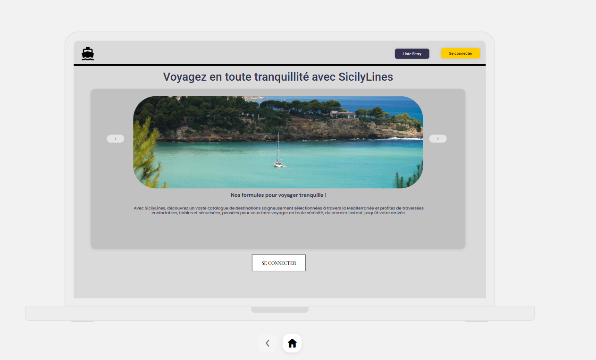
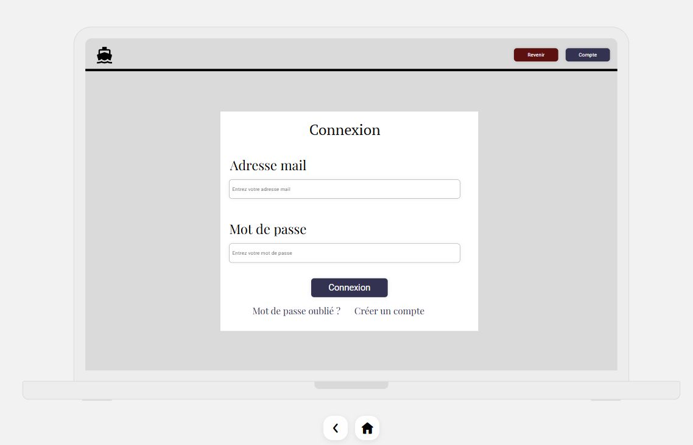
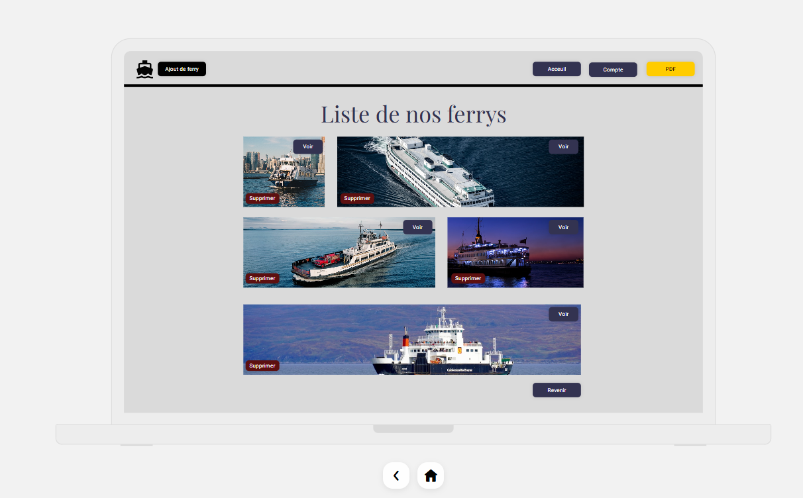
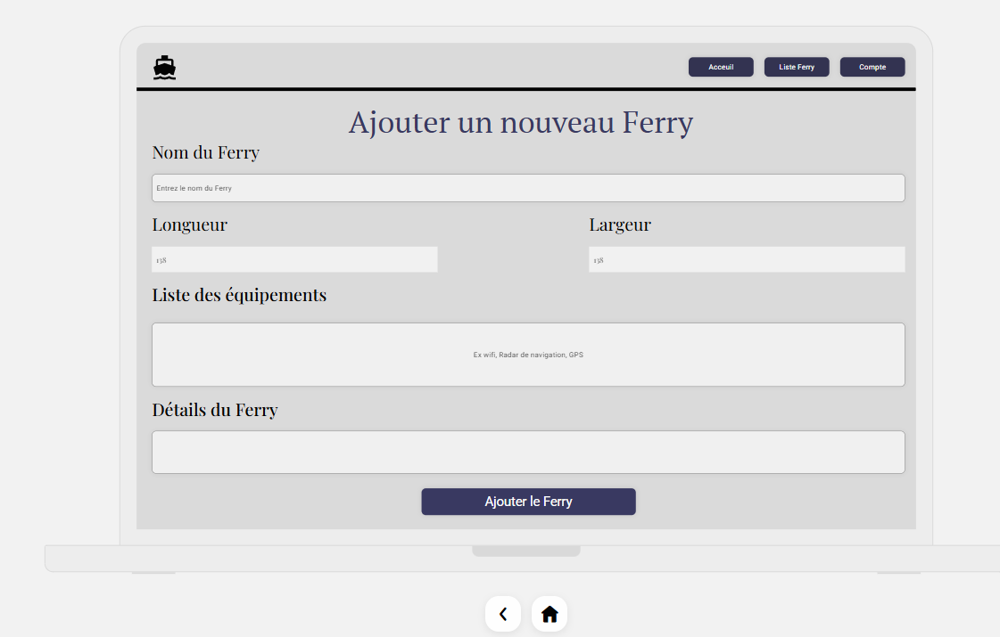

Prototypage de l'interface utilisateur réalisé avec Uizard avant le développement
Avant de commencer le développement du site web Sicily Lines en PHP Laravel, j'ai d'abord réalisé une maquette interactive avec Uizard. L'objectif était de visualiser l'ensemble des pages du site, de définir le parcours utilisateur et de valider l'ergonomie avant d'écrire la moindre ligne de code.
Uizard est un outil de prototypage en ligne assisté par l'intelligence artificielle. Il permet de créer rapidement des maquettes interactives avec un rendu réaliste, de tester la navigation entre les pages et de partager le prototype avec une équipe pour recueillir des retours.

La page d'accueil est la vitrine du site Sicily Lines. Elle présente la compagnie avec un carrousel d'images montrant les destinations méditerranéennes et un texte d'accroche invitant les visiteurs à découvrir les formules de voyage.

La page de connexion permet aux utilisateurs de s'authentifier avec leur adresse email et mot de passe. Le design est épuré et centré pour guider l'utilisateur directement vers l'action.

Cette page affiche l'ensemble de la flotte de ferrys sous forme de galerie d'images. Chaque ferry possède un bouton "Voir" pour consulter ses détails et un bouton "Supprimer" pour les administrateurs. L'interface inclut aussi un bouton d'export PDF.

Le formulaire d'ajout permet aux administrateurs de créer un nouveau ferry dans le système. Il regroupe toutes les informations nécessaires : nom, dimensions, équipements et détails techniques du navire.